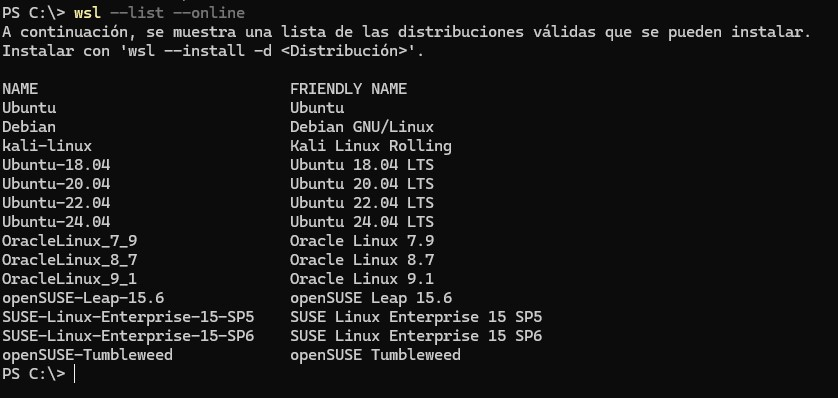

🐧 WSL

Windows Subsystem for Linux (WSL)
Requisitos previos
Considérase unha máquina con Microsoft Windows 10/11.
Instalación
Require permisos de administrador ou root para instalar por primeira vez o compoñente no sistema.
Abrimos unha consola de PowerShell e escribimos o comando:
Por defecto instalaranos unha máquina de Ubuntu.
Tras a instalación é preciso reiniciar, avísanos coa mensaxe: La operación solicitada se realizó correctamente. Los cambios se aplicarán una vez que se reinicie el sistema..
Tras reiniciar, se non nos entra cun simple comando wsl, volvemos a unha consola de PowerShell como usuarios e volvemos escribir:
Se queremos outro sabor de GNU/Linux podemos executar:

E instalar a versión desexada, por exemplo:
Recomendación 1: Empregar systemd no inicio (para que inicie os demos/servizos):
Recomendación 2: Permitir o uso de máis memoria RAM Podes crear no teu cartafol de usuario un arquivo .wslconfig que se aplicaría en global a tódalas máquinas ou ben poñer o seguinte contido no arquivo /etc/wsl.conf dentro de cada máquina.
Podes atopar máis información e opcións de configuración do wsl en: https://learn.microsoft.com/en-us/windows/wsl/wsl-configEntrar no sistema
Abrimos unha consola de PowerShell e executamos:
Para ver as distribucións instaladas:
Se temos máis dunha distribución, debemos seleccionar cal queremos executar (ou executará a por defecto). Por exemplo:
Dentro da máquina entrará por defecto co usuario creado, con ese usuario podémonos facer root con comando sudo: sudo su. Pedirache o contrasinal que elixiches ao crear a máquina, non o contrasinal da conta de Microsoft Windows.
Apagar un WSL
Acceso aos arquivos
Abrir un explorador de arquivos e no enderezo, introduce: \wsl$\DISITRIBUCIÓN. Exemplo con Ubuntu:
Os arquivos gárdanse nun ficheiro .vhdx dentro do cartafol: %LOCALAPPDATA%\Packages\ nese cartafol localizamos a nosa distribución: TheDebian... ou CanonicalGroupLimited.Ubuntu... e dentro do cartafol da distro en: LocalState.
Actualización de WSL
Abrimos unha consola de PowerShell e escribimos o comando:
Borrar unha distribución de WSL
Imaxinemos que queremos borrar a distribución Ubuntu:
Exportar e importar unha distribución
Pode ser útil gardar unha copia de seguridade dunha distribución e restaurala.
Podemos borrar a distribución con: wsl --unregister Debian
Normalmente a ruta de instalación por defecto adoita estar baixo: C:\Users\**USUARIO**\AppData\Local\Packages\TheDebian.... Neste exemplo creamos dentro do cartafol de usuario outro chamado "distros" para localizar o arquivo de disco virtual ext4.vhdx máis fácilmente.
Ollo, se WSL non detecta o usuario tras unha importación do sistema, devolveranos unha consola de root.
Erros comúns
Erro CreateProcessParseCommon
Trata de executar os comandos de WSL na unidade por defecto onde está instalado o sistema operativo (habitualmente C:).
Erros: 0x80370102 ou 0x8007019e (WslRegisterDistribution)
WslRegisterDistribution failed with error: 0x80370102
Please enable the Virtual Machine Platform Windows feature and ensure virtualization is enabled in the BIOS.
For information please visit: https://aka.ms/enablevirtualization
Press any key to continue...
Teremos que asegurarnos que:
- Virtualización activada na BIOS.
- Dependendo do SO:
- Para Microsoft Windows 10: En "Inicio" -> "Aplicaciones y características" -> "Programas y características" -> "Activar o desactivar las funciones de Windows" -> En "características".
- Para Microsoft Windows 11: "Inicio" -> "Activar o desactivar las características de Windows".
- Busca a "Plataforma de máquina virtual" e mira que estea seleccionada.
- Busca o "Subsistema de Windows para Linux" e mira que estea seleccionado.
- Preme en aceptar e reinicia o equipo.
Erro: Non inicia os demos/servizos
Hai que indicarlle que empregue systemd:
Se segue sen funcionar, compre actualizar wsl: